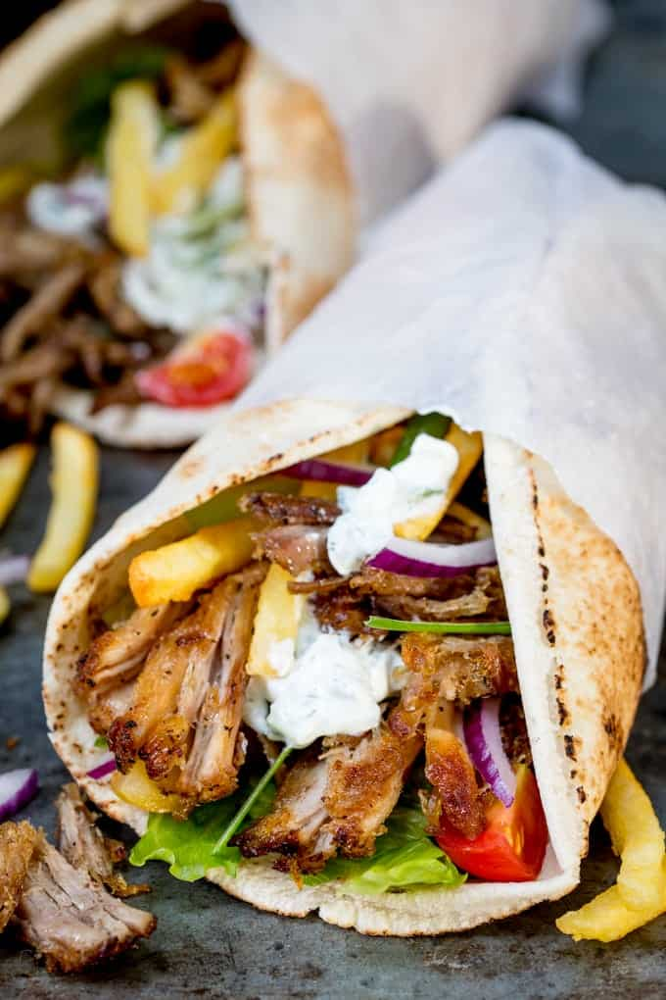

Gyros

Description
This is an easy but delicious homemade gyros recipe.
Just cut up the meat and vegetablees, fry the meat in a wok,
make the sauce, and serve it in a pita.
Ingridients
- Meat
- Vegetables
- Seasoning
- Joghurt
Steps
- Cut up the meat, season it, fry it
- Cut up the vegetables
- Make the sauce with spices and cucumber
- Serve it in a traditional pita